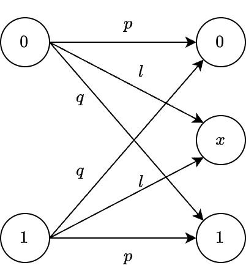

Bayes’ Theorem#
Bayes’ theorem is frequently applied in detection theory, especially in scenarios involving multiple hypotheses.
It is essential for determining the most likely hypothesis based on observed data.
This theorem is pivotal in designing optimal receivers and evaluating their performance.
Case Study: Binary Signaling Problem in Additive Noise#
Consider the following setup:
A signal source, \( S \), can take on two possible values: \( s_1 \) and \( s_0 \), where \( s_1 \) corresponds to transmitting a binary digit one, and \( s_0 \) corresponds to transmitting a binary digit zero.
The system is subject to additive noise, denoted as \( n \).
The received signal, \( y \), can thus be expressed as:
\[ y = s_i + n, \quad \text{where } i = 0, 1 \]
Given the received signal \( y \), the a posteriori probabilities, \( P(S = s_1 \mid y) \) and \( P(S = s_0 \mid y) \), represent the probabilities that the transmitted signal was \( s_1 \) or \( s_0 \) respectively. These probabilities are calculated as:
Here, \( P(y \mid s_i) \) is the likelihood of observing the received signal \( y \) given the transmission of \( s_i \), \( P(s_i) \) represents the a priori probability of transmitting \( s_i \), and \( P(y) \) is the marginal probability of receiving \( y \).
Example: Bayes’ Theorem on the Symmetric Binary Erasure Channel#
Consider the binary signaling problem with additive noise as previously described. Let’s assume the transmitted symbol \( s \) in a communication system can take the values 0 or 1 with equal probability. The a priori probabilities are:
The channel can transform the transmitted symbol into a received symbol \( y \), which can take the values 0, 1, or \( x \). The transition probabilities are given by:

For this example, we assume the transition probabilities are \( p = 0.8 \) and \( q = 0.1 \).
Our goal is to find the a posteriori probabilities \( P(s = 0 \mid y = 0) \), \( P(s = 1 \mid y = 0) \), \( P(s = 0 \mid y = 1) \), \( P(s = 1 \mid y = 1) \), \( P(s = 0 \mid y = x) \), and \( P(s = 1 \mid y = x) \).
First, we calculate the marginal probabilities using the Total Probability Theorem:
Next, we calculate the a posteriori probabilities using Bayes’ Theorem:
With the specific transition probabilities provided, the a posteriori probabilities are:
Insights#
Based on the a posteriori probabilities, we can infer the transmitted signal by examining the received symbol \( y \):
If \( y = x \), there is an equal probability that either 0 or 1 was sent.
If \( y = 0 \), the probability that a 0 was sent is \( \frac{8}{9} \), and the probability that a 1 was sent is \( \frac{1}{9} \).
If \( y = 1 \), the probability that a 1 was sent is \( \frac{8}{9} \), and the probability that a 0 was sent is \( \frac{1}{9} \).
This information can be used in a certain decision rule to make a decision on what signal was transmitted, based on the probabilistic knowledge of the received observation.
In the context of the Binary Erasure Channel (BEC), when the receiver receives a message denoted as “x,” it indicates that the transmitted bit was “erased” during transmission, meaning the receiver is aware that a bit was sent but cannot determine whether it was a 0 or a 1.
This erasure event is characterized by the symbol “x,” signifying the loss of the specific information content of the bit due to noise or other channel imperfections. Thus, the receiver knows a bit was transmitted but lacks the information to determine which bit was sent.
Simulation#
import numpy as np
# Define the transition probabilities
p_transition = 0.8
q_transition = 0.1
l_transition = 0.1 # Assume l = 0.1
# Transmitted symbols probabilities
P_s0 = 0.5
P_s1 = 0.5
# Compute the marginal probabilities using the total probability theorem
P_y0 = (p_transition * P_s0) + (q_transition * P_s1)
P_y1 = (q_transition * P_s0) + (p_transition * P_s1)
P_yx = l_transition
# Compute the a posteriori probabilities using Bayes' theorem
P_s0_y0 = (p_transition * P_s0) / P_y0
P_s1_y0 = (q_transition * P_s1) / P_y0
P_s0_y1 = (q_transition * P_s0) / P_y1
P_s1_y1 = (p_transition * P_s1) / P_y1
P_s0_yx = (l_transition * P_s0) / P_yx
P_s1_yx = (l_transition * P_s1) / P_yx
# Print theoretical results
print("Theoretical probabilities:")
print("P(s = 0 | y = 0) =", P_s0_y0)
print("P(s = 1 | y = 0) =", P_s1_y0)
print("P(s = 0 | y = 1) =", P_s0_y1)
print("P(s = 1 | y = 1) =", P_s1_y1)
print("P(s = 0 | y = x) =", P_s0_yx)
print("P(s = 1 | y = x) =", P_s1_yx)
# Simulate the channel
def simulate_channel(s, p_transition, q_transition, l_transition):
if s == 0:
return np.random.choice([0, 1, 13], p=[p_transition, q_transition, l_transition])
else:
return np.random.choice([1, 0, 13], p=[p_transition, q_transition, l_transition])
# Number of simulations
num_simulations = 10000
transmitted_symbols = np.random.choice([0, 1], size=num_simulations, p=[P_s0, P_s1])
received_symbols = np.array([simulate_channel(s, p_transition, q_transition, l_transition) for s in transmitted_symbols])
# Calculate empirical probabilities
def calculate_empirical_prob(transmitted_symbols, received_symbols, s_value, y_value):
num_y = np.sum(received_symbols == y_value)
if num_y == 0:
return np.nan # Return nan if there are no instances of y_value to avoid division by zero
num_s_and_y = np.sum((transmitted_symbols == s_value) & (received_symbols == y_value))
return num_s_and_y / num_y
# Empirical calculations
received_0 = received_symbols == 0
received_1 = received_symbols == 1
received_x = received_symbols == 13 # Erasure symbol x = 13
empirical_P_s0_y0 = calculate_empirical_prob(transmitted_symbols, received_symbols, 0, 0)
empirical_P_s1_y0 = calculate_empirical_prob(transmitted_symbols, received_symbols, 1, 0)
empirical_P_s0_y1 = calculate_empirical_prob(transmitted_symbols, received_symbols, 0, 1)
empirical_P_s1_y1 = calculate_empirical_prob(transmitted_symbols, received_symbols, 1, 1)
empirical_P_s0_yx = calculate_empirical_prob(transmitted_symbols, received_symbols, 0, 13)
empirical_P_s1_yx = calculate_empirical_prob(transmitted_symbols, received_symbols, 1, 13)
# Print empirical results
print("\nEmpirical probabilities after simulation:")
print("P(s = 0 | y = 0) =", empirical_P_s0_y0)
print("P(s = 1 | y = 0) =", empirical_P_s1_y0)
print("P(s = 0 | y = 1) =", empirical_P_s0_y1)
print("P(s = 1 | y = 1) =", empirical_P_s1_y1)
print("P(s = 0 | y = x) =", empirical_P_s0_yx)
print("P(s = 1 | y = x) =", empirical_P_s1_yx)
# Debugging information
print("\nDebugging Information:")
print("Count of received symbols y=0:", np.sum(received_0))
print("Count of received symbols y=1:", np.sum(received_1))
print("Count of received symbols y=x:", np.sum(received_x))
print("Count of transmitted symbols s=0 when y=0:", np.sum((transmitted_symbols == 0) & received_0))
print("Count of transmitted symbols s=1 when y=0:", np.sum((transmitted_symbols == 1) & received_0))
print("Count of transmitted symbols s=0 when y=1:", np.sum((transmitted_symbols == 0) & received_1))
print("Count of transmitted symbols s=1 when y=1:", np.sum((transmitted_symbols == 1) & received_1))
print("Count of transmitted symbols s=0 when y=x:", np.sum((transmitted_symbols == 0) & received_x))
print("Count of transmitted symbols s=1 when y=x:", np.sum((transmitted_symbols == 1) & received_x))
Theoretical probabilities:
P(s = 0 | y = 0) = 0.888888888888889
P(s = 1 | y = 0) = 0.11111111111111112
P(s = 0 | y = 1) = 0.11111111111111112
P(s = 1 | y = 1) = 0.888888888888889
P(s = 0 | y = x) = 0.5
P(s = 1 | y = x) = 0.5
Empirical probabilities after simulation:
P(s = 0 | y = 0) = 0.8898193036579991
P(s = 1 | y = 0) = 0.11018069634200088
P(s = 0 | y = 1) = 0.11371312767394731
P(s = 1 | y = 1) = 0.8862868723260527
P(s = 0 | y = x) = 0.49167482859941236
P(s = 1 | y = x) = 0.5083251714005876
Debugging Information:
Count of received symbols y=0: 4538
Count of received symbols y=1: 4441
Count of received symbols y=x: 1021
Count of transmitted symbols s=0 when y=0: 4038
Count of transmitted symbols s=1 when y=0: 500
Count of transmitted symbols s=0 when y=1: 505
Count of transmitted symbols s=1 when y=1: 3936
Count of transmitted symbols s=0 when y=x: 502
Count of transmitted symbols s=1 when y=x: 519
# Print some values of transmitted_symbols and corresponding received_symbols
print("30 samples of transmitted and received symbols:")
for i in range(20):
transmitted = transmitted_symbols[i]
received = received_symbols[i]
success = (transmitted == received) if (received == 0 or received == 1) else "Erasure"
print(f"Transmitted: {transmitted}, Received: {received}, Success: {success}")
30 samples of transmitted and received symbols:
Transmitted: 0, Received: 0, Success: True
Transmitted: 0, Received: 0, Success: True
Transmitted: 1, Received: 13, Success: Erasure
Transmitted: 1, Received: 1, Success: True
Transmitted: 1, Received: 1, Success: True
Transmitted: 1, Received: 13, Success: Erasure
Transmitted: 1, Received: 1, Success: True
Transmitted: 0, Received: 0, Success: True
Transmitted: 0, Received: 0, Success: True
Transmitted: 0, Received: 13, Success: Erasure
Transmitted: 0, Received: 0, Success: True
Transmitted: 1, Received: 1, Success: True
Transmitted: 0, Received: 0, Success: True
Transmitted: 0, Received: 1, Success: False
Transmitted: 0, Received: 0, Success: True
Transmitted: 0, Received: 13, Success: Erasure
Transmitted: 0, Received: 0, Success: True
Transmitted: 1, Received: 13, Success: Erasure
Transmitted: 0, Received: 1, Success: False
Transmitted: 0, Received: 0, Success: True
\( x \) as a Random Variable
Note that, in this case, there is an issue where P(s = 0 | y = x) = nan and P(s = 1 | y = x) = nan because x is random, we need to modify the empirical calculation to consider the event y = x as any value of y that is not 0 or 1.
import numpy as np
# Define the transition probabilities
p_transition = 0.8
q_transition = 0.1
l_transition = 0.1 # Assume l = 0.1
# Transmitted symbols probabilities
P_s0 = 0.5
P_s1 = 0.5
# Compute the marginal probabilities using the total probability theorem
P_y0 = (p_transition * P_s0) + (q_transition * P_s1)
P_y1 = (q_transition * P_s0) + (p_transition * P_s1)
P_yx = l_transition
# Compute the a posteriori probabilities using Bayes' theorem
P_s0_y0 = (p_transition * P_s0) / P_y0
P_s1_y0 = (q_transition * P_s1) / P_y0
P_s0_y1 = (q_transition * P_s0) / P_y1
P_s1_y1 = (p_transition * P_s1) / P_y1
P_s0_yx = (l_transition * P_s0) / P_yx
P_s1_yx = (l_transition * P_s1) / P_yx
# Print theoretical results
print("Theoretical probabilities:")
print("P(s = 0 | y = 0) =", P_s0_y0)
print("P(s = 1 | y = 0) =", P_s1_y0)
print("P(s = 0 | y = 1) =", P_s0_y1)
print("P(s = 1 | y = 1) =", P_s1_y1)
print("P(s = 0 | y = x) =", P_s0_yx)
print("P(s = 1 | y = x) =", P_s1_yx)
# Simulate the channel
def simulate_channel(s, p_transition, q_transition, l_transition):
noise_value = np.random.normal(0, 1) # Generate Gaussian noise with mean 0 and standard deviation 1
if s == 0:
return np.random.choice([0, 1, noise_value], p=[p_transition, q_transition, l_transition])
else:
return np.random.choice([1, 0, noise_value], p=[p_transition, q_transition, l_transition])
# Number of simulations
num_simulations = 10000
transmitted_symbols = np.random.choice([0, 1], size=num_simulations, p=[P_s0, P_s1])
received_symbols = np.array([simulate_channel(s, p_transition, q_transition, l_transition) for s in transmitted_symbols])
# Calculate empirical probabilities
def calculate_empirical_prob(transmitted_symbols, received_symbols, s_value, y_value):
num_y = np.sum(received_symbols == y_value)
if num_y == 0:
return np.nan # Return nan if there are no instances of y_value to avoid division by zero
num_s_and_y = np.sum((transmitted_symbols == s_value) & (received_symbols == y_value))
return num_s_and_y / num_y
# Handle received noise for empirical calculations
def calculate_empirical_prob_noise(transmitted_symbols, received_symbols, s_value):
noise_mask = (received_symbols != 0) & (received_symbols != 1) # Identify all y != 0 or 1
num_noise = np.sum(noise_mask)
if num_noise == 0:
return np.nan
num_s_and_noise = np.sum((transmitted_symbols == s_value) & noise_mask)
return num_s_and_noise / num_noise
# Empirical calculations
received_0 = received_symbols == 0
received_1 = received_symbols == 1
empirical_P_s0_y0 = calculate_empirical_prob(transmitted_symbols, received_symbols, 0, 0)
empirical_P_s1_y0 = calculate_empirical_prob(transmitted_symbols, received_symbols, 1, 0)
empirical_P_s0_y1 = calculate_empirical_prob(transmitted_symbols, received_symbols, 0, 1)
empirical_P_s1_y1 = calculate_empirical_prob(transmitted_symbols, received_symbols, 1, 1)
empirical_P_s0_yx = calculate_empirical_prob_noise(transmitted_symbols, received_symbols, 0)
empirical_P_s1_yx = calculate_empirical_prob_noise(transmitted_symbols, received_symbols, 1)
# Print empirical results
print("\nEmpirical probabilities after simulation:")
print("P(s = 0 | y = 0) =", empirical_P_s0_y0)
print("P(s = 1 | y = 0) =", empirical_P_s1_y0)
print("P(s = 0 | y = 1) =", empirical_P_s0_y1)
print("P(s = 1 | y = 1) =", empirical_P_s1_y1)
print("P(s = 0 | y = x) =", empirical_P_s0_yx)
print("P(s = 1 | y = x) =", empirical_P_s1_yx)
# Debugging information
print("\nDebugging Information:")
print("Count of received symbols y=0:", np.sum(received_0))
print("Count of received symbols y=1:", np.sum(received_1))
print("Count of received symbols y=x (noise):", np.sum((received_symbols != 0) & (received_symbols != 1)))
print("Count of transmitted symbols s=0 when y=0:", np.sum((transmitted_symbols == 0) & received_0))
print("Count of transmitted symbols s=1 when y=0:", np.sum((transmitted_symbols == 1) & received_0))
print("Count of transmitted symbols s=0 when y=1:", np.sum((transmitted_symbols == 0) & received_1))
print("Count of transmitted symbols s=1 when y=1:", np.sum((transmitted_symbols == 1) & received_1))
print("Count of transmitted symbols s=0 when y=x (noise):", np.sum((transmitted_symbols == 0) & (received_symbols != 0) & (received_symbols != 1)))
print("Count of transmitted symbols s=1 when y=x (noise):", np.sum((transmitted_symbols == 1) & (received_symbols != 0) & (received_symbols != 1)))
Theoretical probabilities:
P(s = 0 | y = 0) = 0.888888888888889
P(s = 1 | y = 0) = 0.11111111111111112
P(s = 0 | y = 1) = 0.11111111111111112
P(s = 1 | y = 1) = 0.888888888888889
P(s = 0 | y = x) = 0.5
P(s = 1 | y = x) = 0.5
Empirical probabilities after simulation:
P(s = 0 | y = 0) = 0.8985539488320355
P(s = 1 | y = 0) = 0.1014460511679644
P(s = 0 | y = 1) = 0.1144578313253012
P(s = 1 | y = 1) = 0.8855421686746988
P(s = 0 | y = x) = 0.49560117302052786
P(s = 1 | y = x) = 0.5043988269794721
Debugging Information:
Count of received symbols y=0: 4495
Count of received symbols y=1: 4482
Count of received symbols y=x (noise): 1023
Count of transmitted symbols s=0 when y=0: 4039
Count of transmitted symbols s=1 when y=0: 456
Count of transmitted symbols s=0 when y=1: 513
Count of transmitted symbols s=1 when y=1: 3969
Count of transmitted symbols s=0 when y=x (noise): 507
Count of transmitted symbols s=1 when y=x (noise): 516
# Print some values of transmitted_symbols and corresponding received_symbols
print("30 samples of transmitted and received symbols:")
for i in range(20):
transmitted = transmitted_symbols[i]
received = received_symbols[i]
success = (transmitted == received) if (received == 0 or received == 1) else "Erasure"
print(f"Transmitted: {transmitted}, Received: {received}, Success: {success}")
30 samples of transmitted and received symbols:
Transmitted: 0, Received: 0.0, Success: True
Transmitted: 1, Received: 1.0, Success: True
Transmitted: 0, Received: 0.0, Success: True
Transmitted: 0, Received: 0.0, Success: True
Transmitted: 0, Received: 0.0, Success: True
Transmitted: 1, Received: 1.0, Success: True
Transmitted: 0, Received: 0.0, Success: True
Transmitted: 1, Received: -0.6761630375304907, Success: Erasure
Transmitted: 0, Received: 0.0, Success: True
Transmitted: 0, Received: 0.0, Success: True
Transmitted: 0, Received: 0.0, Success: True
Transmitted: 1, Received: 1.0, Success: True
Transmitted: 1, Received: 1.0, Success: True
Transmitted: 1, Received: 1.0, Success: True
Transmitted: 0, Received: 0.33162854880206405, Success: Erasure
Transmitted: 1, Received: 1.0, Success: True
Transmitted: 1, Received: 1.0, Success: True
Transmitted: 0, Received: 0.0, Success: True
Transmitted: 0, Received: 0.0, Success: True
Transmitted: 0, Received: 0.0, Success: True
Bayes Receiver#
As discussed above, we utilize the statistical knowledge of the transmitted signal given the received observation, represented by the a posteriori probabilities, to make a decision using a decision criterion or decision rule about which signal was actually transmitted. The Bayes receiver is one such decision criterion.
Specifically, the optimal detector (Bayes receiver) concludes that \( s_1 \) was transmitted if:
or equivalently,
since \( P(y) \) is constant. For equal a priori probabilities, i.e., \( P(s_0) = P(s_1) \), the decision rule simplifies to choosing \( s_1 \) if:
Any device that follows this decision rule is considered an optimal receiver. Thus, Bayes’ theorem is a fundamental concept in detection theory, guiding the design of optimal receivers.
Example: Bayes’ Theorem in Additive Noise with \( s = -1 \) or \( +1 \) (Antipodal Signal)#
Consider a scenario where the transmitted signal \( s \) can be either \( -1 \) or \( +1 \) and is corrupted by additive noise \( n \), resulting in the received signal \( y \), expressed as:
Assume a binary source model with equal a priori probabilities for the transmitted signals:
Let the additive noise \( n \) take the values \( +1 \) and \( -1 \) with equal probability:
The task is to determine the a posteriori probabilities. The received signal \( y \) can take the following values based on the combinations of \( s \) and \( n \):
Using the noise probabilities, the transition probabilities are computed as follows:
The marginal probabilities, computed using the Total Probability Theorem, are:
The a posteriori probabilities, derived using Bayes’ theorem, are:
Simulation#
The following code snippet implements the Bayes receiver described above, i.e., the detection of transmitted symbols using Bayes’ rule based on the received symbols.
Detection Using Bayes’ Rule:
The decision process for each received symbol \( y \) involves comparing the a posteriori probabilities of the transmitted symbols \( s = 1 \) and \( s = -1 \) given \( y \). The symbols are detected based on the higher a posteriori probability:
Let \( \hat{s} \) represent the detected symbol.
For \( y = 2 \):
\[ \text{If } P(s = 1 \mid y = 2) > P(s = -1 \mid y = 2), \text{ then } \hat{s} = 1 \quad \text{Else } \hat{s} = -1 \]For \( y = 0 \):
\[ \text{If } P(s = 1 \mid y = 0) > P(s = -1 \mid y = 0), \text{ then } \hat{s} = 1 \quad \text{Else } \hat{s} = -1 \]For \( y = -2 \):
\[ \text{If } P(s = 1 \mid y = -2) > P(s = -1 \mid y = -2), \text{ then } \hat{s} = 1 \quad \text{Else } \hat{s} = -1 \]
Detection Accuracy:
The script prints out the counts of transmitted and detected symbols, providing a summary of the detection performance.
The detection accuracy is calculated as the proportion of correctly detected symbols out of the total number of simulations:
import numpy as np
# Define the probabilities
P_s_pos_1 = 0.5
P_s_neg_1 = 0.5
P_n1 = 0.5
P_n_neg_1 = 0.5
# Theoretical calculations
P_y_pos_2_s_pos_1 = P_n1
P_y_pos_2_s_neg_1 = 0
P_y0_s_pos_1 = P_n_neg_1
P_y0_s_neg_1 = P_n1
P_y_neg_2_s_pos_1 = 0
P_y_neg_2_s_neg_1 = P_n_neg_1
# Calculate total probabilities using the theorem of total probability
P_y_pos_2 = P_y_pos_2_s_pos_1 * P_s_pos_1 + P_y_pos_2_s_neg_1 * P_s_neg_1
P_y0 = P_y0_s_pos_1 * P_s_pos_1 + P_y0_s_neg_1 * P_s_neg_1
P_y_neg_2 = P_y_neg_2_s_pos_1 * P_s_pos_1 + P_y_neg_2_s_neg_1 * P_s_neg_1
# Calculate a posteriori probabilities using Bayes' theorem
P_s_pos_1_y_pos_2 = P_y_pos_2_s_pos_1 * P_s_pos_1 / P_y_pos_2
P_s_pos_1_y0 = P_y0_s_pos_1 * P_s_pos_1 / P_y0
P_s_pos_1_y_neg_2 = 0
P_s_neg_1_y_pos_2 = 0
P_s_neg_1_y0 = P_y0_s_neg_1 * P_s_neg_1 / P_y0
P_s_neg_1_y_neg_2 = P_y_neg_2_s_neg_1 * P_s_neg_1 / P_y_neg_2
# Print theoretical results
print("Theoretical probabilities:")
print("P(s = 1 | y = 2) =", P_s_pos_1_y_pos_2)
print("P(s = 1 | y = 0) =", P_s_pos_1_y0)
print("P(s = 1 | y = -2) =", P_s_pos_1_y_neg_2)
print("P(s = -1 | y = 2) =", P_s_neg_1_y_pos_2)
print("P(s = -1 | y = 0) =", P_s_neg_1_y0)
print("P(s = -1 | y = -2) =", P_s_neg_1_y_neg_2)
# Simulation
def generate_received_symbol(s):
noise = np.random.choice([1, -1], p=[P_n1, P_n_neg_1])
return s + noise
num_simulations = 10000
transmitted_symbols = np.random.choice([1, -1], size=num_simulations, p=[P_s_pos_1, P_s_neg_1])
received_symbols = np.array([generate_received_symbol(s) for s in transmitted_symbols])
# Calculate empirical probabilities based on received symbols
def calculate_empirical_prob(transmitted_symbols, received_symbols, s_value, y_value):
num_received = np.sum(received_symbols == y_value)
if num_received == 0:
return np.nan # Return nan if there are no instances of y_value to avoid division by zero
num_s_and_received = np.sum((transmitted_symbols == s_value) & (received_symbols == y_value))
return num_s_and_received / num_received
empirical_P_s_pos_1_y_pos_2 = calculate_empirical_prob(transmitted_symbols, received_symbols, 1, 2)
empirical_P_s_neg_1_y_pos_2 = calculate_empirical_prob(transmitted_symbols, received_symbols, -1, 2)
empirical_P_s_pos_1_y0 = calculate_empirical_prob(transmitted_symbols, received_symbols, 1, 0)
empirical_P_s_neg_1_y0 = calculate_empirical_prob(transmitted_symbols, received_symbols, -1, 0)
empirical_P_s_pos_1_y_neg_2 = calculate_empirical_prob(transmitted_symbols, received_symbols, 1, -2)
empirical_P_s_neg_1_y_neg_2 = calculate_empirical_prob(transmitted_symbols, received_symbols, -1, -2)
# Print empirical results
print("\nEmpirical probabilities after simulation:")
print("P(s = 1 | y = 2) =", empirical_P_s_pos_1_y_pos_2)
print("P(s = 1 | y = 0) =", empirical_P_s_pos_1_y0)
print("P(s = 1 | y = -2) =", empirical_P_s_pos_1_y_neg_2)
print("P(s = -1 | y = 2) =", empirical_P_s_neg_1_y_pos_2)
print("P(s = -1 | y = 0) =", empirical_P_s_neg_1_y0)
print("P(s = -1 | y = -2) =", empirical_P_s_neg_1_y_neg_2)
Theoretical probabilities:
P(s = 1 | y = 2) = 1.0
P(s = 1 | y = 0) = 0.5
P(s = 1 | y = -2) = 0
P(s = -1 | y = 2) = 0
P(s = -1 | y = 0) = 0.5
P(s = -1 | y = -2) = 1.0
Empirical probabilities after simulation:
P(s = 1 | y = 2) = 1.0
P(s = 1 | y = 0) = 0.508011503697617
P(s = 1 | y = -2) = 0.0
P(s = -1 | y = 2) = 0.0
P(s = -1 | y = 0) = 0.4919884963023829
P(s = -1 | y = -2) = 1.0
# Detection using Bayes' rule
detected_symbols = np.zeros_like(received_symbols)
for i, y in enumerate(received_symbols):
if y == 2:
detected_symbols[i] = 1 if P_s_pos_1_y_pos_2 > P_s_neg_1_y_pos_2 else -1
elif y == 0:
detected_symbols[i] = 1 if P_s_pos_1_y0 > P_s_neg_1_y0 else -1
elif y == -2:
detected_symbols[i] = 1 if P_s_pos_1_y_neg_2 > P_s_neg_1_y_neg_2 else -1
transmitted_s_pos_1 = np.sum(transmitted_symbols == 1)
transmitted_s_neg_1 = np.sum(transmitted_symbols == -1)
detected_s_pos_1 = np.sum(detected_symbols == 1)
detected_s_neg_1 = np.sum(detected_symbols == -1)
# Print detection results
print("\nDetection results:")
print("Number of transmitted s = 1:", transmitted_s_pos_1)
print("Number of detected s = 1:", detected_s_pos_1)
print("Number of transmitted s = -1:", transmitted_s_neg_1)
print("Number of detected s = -1:", detected_s_neg_1)
# Calculate detection accuracy
detection_accuracy = np.sum(detected_symbols == transmitted_symbols) / num_simulations
print("Detection accuracy:", detection_accuracy)
Detection results:
Number of transmitted s = 1: 5049
Number of detected s = 1: 2576
Number of transmitted s = -1: 4951
Number of detected s = -1: 7424
Detection accuracy: 0.7527
# Print some samples of transmitted, received, and detected symbols with success results
print("\nSome samples of (transmitted_symbols, received_symbols, detected_symbols) and success results:")
for i in range(10):
transmitted = transmitted_symbols[i]
received = received_symbols[i]
detected = detected_symbols[i]
success = "Yes" if transmitted == detected else "No"
print(f"Transmitted: {transmitted}, Received: {received}, Detected: {detected}, Success: {success}")
Some samples of (transmitted_symbols, received_symbols, detected_symbols) and success results:
Transmitted: 1, Received: 2, Detected: 1, Success: Yes
Transmitted: -1, Received: -2, Detected: -1, Success: Yes
Transmitted: 1, Received: 0, Detected: -1, Success: No
Transmitted: -1, Received: -2, Detected: -1, Success: Yes
Transmitted: 1, Received: 2, Detected: 1, Success: Yes
Transmitted: 1, Received: 2, Detected: 1, Success: Yes
Transmitted: -1, Received: 0, Detected: -1, Success: Yes
Transmitted: 1, Received: 0, Detected: -1, Success: No
Transmitted: 1, Received: 2, Detected: 1, Success: Yes
Transmitted: -1, Received: -2, Detected: -1, Success: Yes